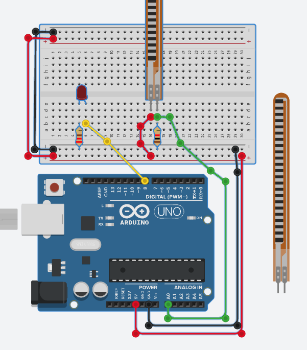
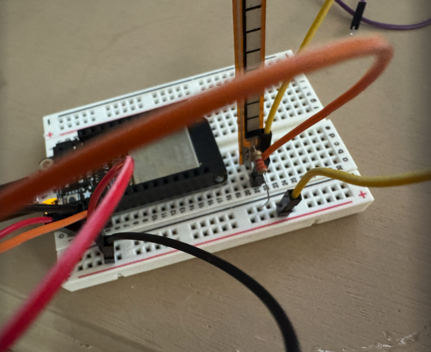
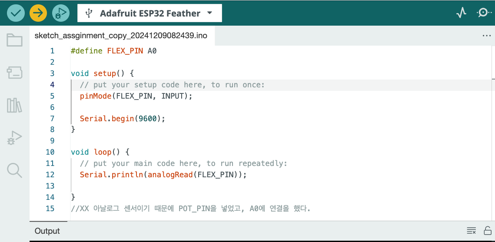
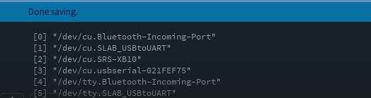
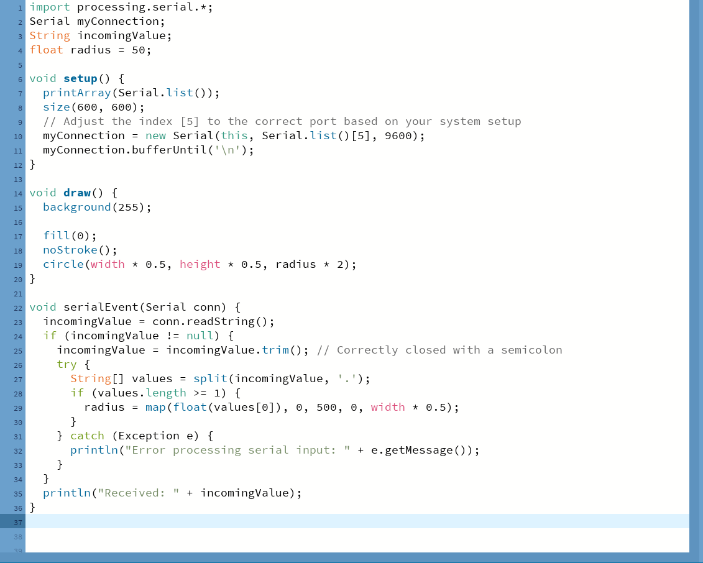

Connected the circuit to the ESP32, referring to Autodesk Thinkercad.
 Since it is an analog sensor, POT_PIN was added and connected to A0.
Used `printArray(Serial.list());` to check the connected ports.
There were many challenges until I successfully made the connection. Initially, the code I wrote worked, and I took a video. However, when I reopened the code a week later, it didn’t work. After multiple attempts, I eventually rewrote the code using Ethan's code, who used the same sensor and interaction. The issue was that even Ethan's code didn't work at first. The reasons included Adafruit being disconnected and the port being incorrectly connected, possibly due to not using the Arduino for a week or an update. Additionally, with the help of ChatGPT, I added exception handling using the try function, and it finally worked. Honestly, I made so many changes that I’m not exactly sure what the issue was… But now it works!!!
